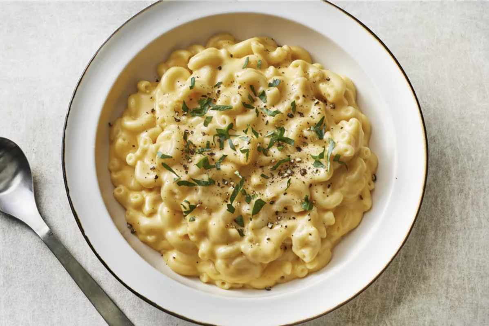

Comfort Mac and Cheese

Description
Quick and easy to make comfort designer
mac and cheese. Usually, Mac and Cheese outside is costly at around 20 bucks, unless
you buy store-bought. This recipe will make Mac and Cheese delicious yet affordable
Ingredients
- 1 (8 ounce) box elbow macaroni
- ¼ cup butter
- ¼ cup all-purpose flour
- ½ teaspoon salt
- ground black pepper to taste
- 2 cups milk
- 2 cups shredded Cheddar cheese
Steps
- Bring a large pot of lightly salted water to a boil.
Cook elbow macaroni in the boiling water, stirring occasionally until cooked through but firm to the bite, 8 minutes.
- At the same time, melt butter in a saucepan over medium heat. Add flour, salt, and pepper and stir until smooth, about 5 minutes.
Pour in milk slowly, while stirring continuously.
Continue to cook and stir until mixture is smooth and bubbling, about 5 minutes, making sure the milk doesn't burn.
- Add Cheddar cheese and stir until melted, 2 to 4 minutes.
- Drain macaroni and fold into cheese sauce until coated.